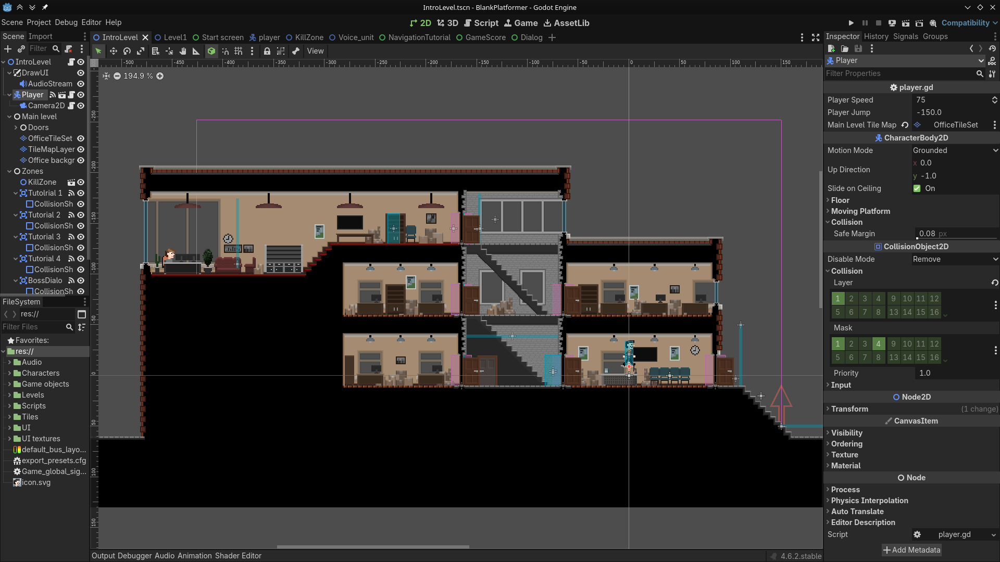
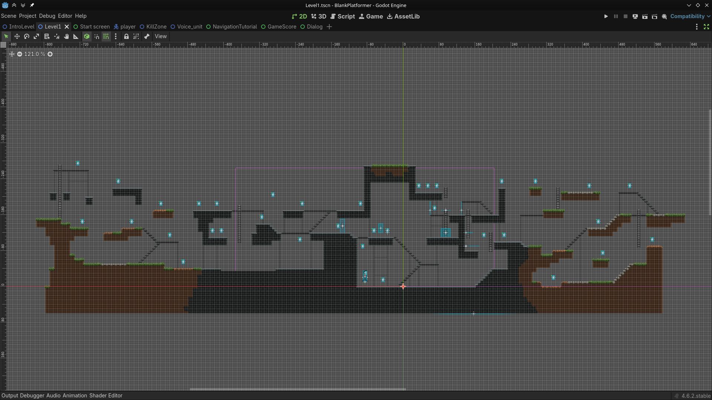
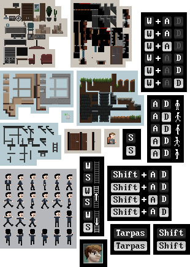

8-bit retro stiliaus kompiuterinis platforminis žaidimas. Žaidimas buvo sukurtas su „Godot“, o logika parašya „GDscript“ programavim kalba. Žaidimo blokų išvaizdą ir UI elementai buvo piešti su „Krita“.
*Žaidimas reikalauja klaviatūros jo valdymui.
Eiti į pilno ekrano režimą


